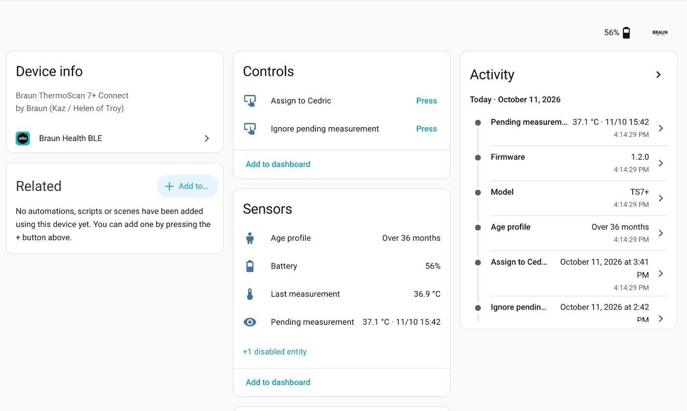
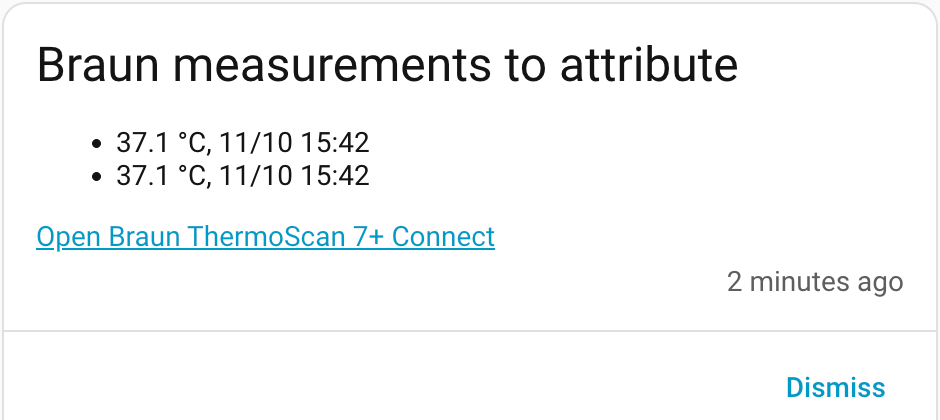
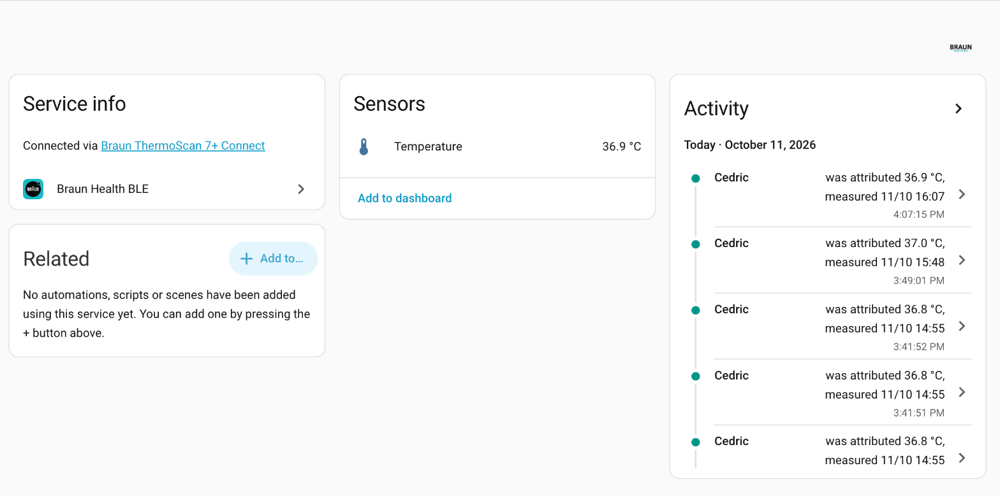
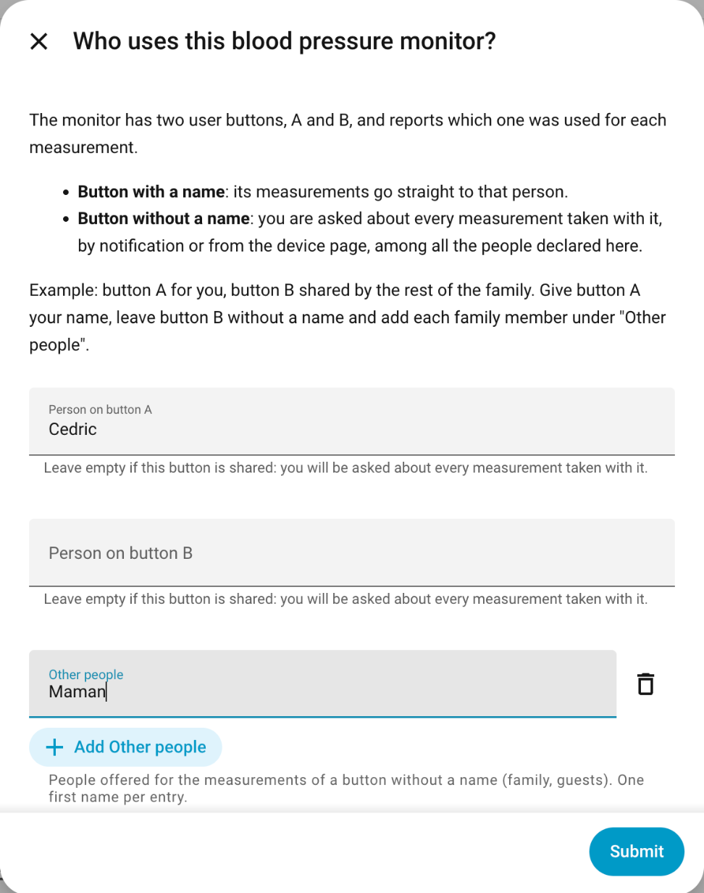

Thermometers and blood pressure monitors sync over Bluetooth the second you measure. No cloud, no account, no app in the middle.


Home Assistant connects as soon as the device wakes up and stays with it while it is on, through any Bluetooth adapter or ESPHome Bluetooth proxy.
Use the thermometer or the monitor exactly as before. Nothing to press, no phone to unlock.
Each reading arrives within a second, with its real time. Readings taken out of range come in at the next power-on.
Per-person sensors and long-term statistics, dated when the reading was taken, not when it was filed.
A thermometer cannot tell who was measured, so its readings wait to be attributed. A blood pressure monitor knows its user buttons and routes readings by itself.

Devices are discovered on their own. Thermometers pair with the six-digit PIN they display; blood pressure monitors need no pairing at all. People are declared in the same flow.

Each model has its own support ledger, with captured bytes and evidence levels. Support is only claimed after a test on the real device.
Have another Braun Bluetooth device? The contributing guide shows how a model is added without touching the core.
cedhuf/ha-braun-ble as a custom repository, category Integration, or use the button below.Requires Home Assistant 2026.6 or later.